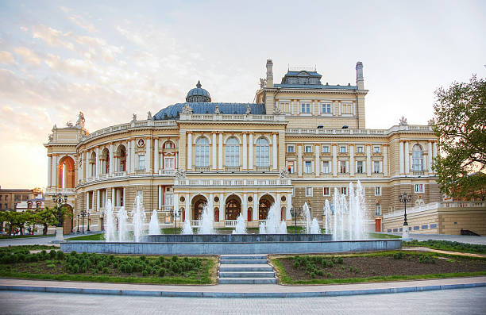
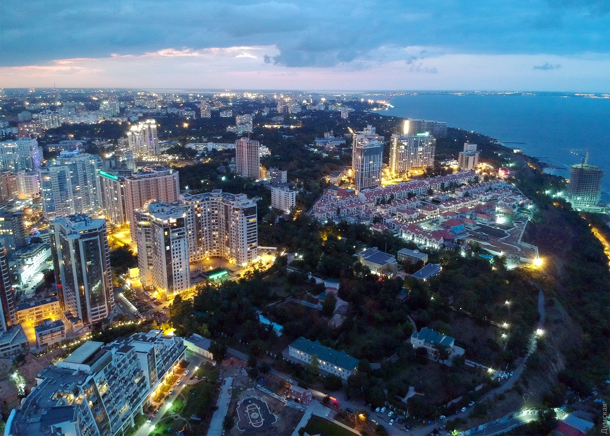

Одеса — велике портове місто на півдні України, розташоване на узбережжі Чорного моря. Тут мешкає близько 1 мільйона людей. Одеса є одним із найважливіших міст країни — як у культурному, так і в економічному плані. Площа міста становить приблизно 160 квадратних кілометрів.
Одесу часто називають перлиною біля моря. Вона відома своїм неповторним гумором, особливою атмосферою, архітектурною красою та мовним колоритом. У центрі міста можна побачити знаменитий Оперний театр, Потьомкінські сходи й Дерибасівську вулицю — одне з найулюбленіших місць для прогулянок як місцевих жителів, так і туристів.
Місто також славиться пляжами, морським портом і курортним життям. Улітку Одеса наповнюється святковим настроєм — тут проходять фестивалі, концерти, а набережна перетворюється на улюблене місце відпочинку біля моря.
Крім того, Одеса є важливим освітнім і мистецьким центром: тут працює багато університетів, театрів, музеїв і галерей, що робить місто живим і творчим у будь-яку пору року.

